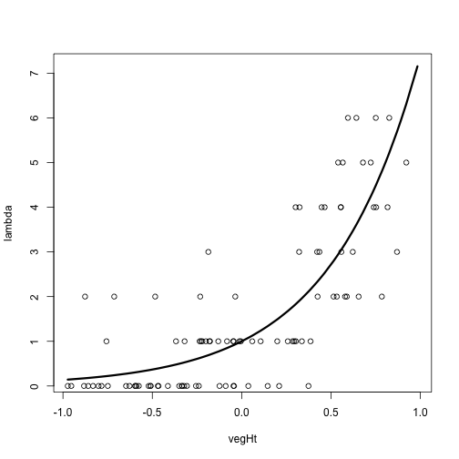

Set up model variables and make some plots.
The first section that sets up the model variables and makes some plots. You should be able to run directly through this.
## Original code from Section 6.4 for AHM
# 6.4 A slightly more complex N-mixture model with covariates
# ------------------------------------------------------------------------
# Choose sample sizes and prepare obs. data array y
set.seed(1) # So we all get same data set
M <- 100 # Number of sites
J <- 3 # Number of repeated abundance measurements
C <- matrix(NA, nrow = M, ncol = J) # to contain the observed data
# Create a covariate called vegHt
vegHt <- sort(runif(M, -1, 1)) # sort for graphical convenience
# Choose parameter values for abundance model and compute lambda
beta0 <- 0 # Log-scale intercept
beta1 <- 2 # Log-scale slope for vegHt
lambda <- exp(beta0 + beta1 * vegHt) # Expected abundance
plot(vegHt, lambda, type = "l", lwd = 3) # Expected abundance
# Draw local abundance and look at data so far
N <- rpois(M, lambda)
points(vegHt, N) # Add realized abundance to plot

plot of chunk setup-section
table(N)## N
## 0 1 2 3 4 5 6 8 9
## 35 24 12 7 9 5 4 3 1# Plot the true system state (Fig. left)
par(mfrow = c(1, 3), mar = c(5,5,2,2), cex.axis = 1.5, cex.lab = 1.5)
plot(vegHt, N, xlab="Vegetation height", ylab="True abundance (N)", frame = F, cex = 1.5)
lines(seq(-1,1,,100), exp(beta0 + beta1* seq(-1,1,,100)), lwd=3, col = "red")
# Create a covariate called wind
wind <- array(runif(M * J, -1, 1), dim = c(M, J))
# Choose parameter values for measurement error model and compute detectability
alpha0 <- -2 # Logit-scale intercept
alpha1 <- -3 # Logit-scale slope for wind
p <- plogis(alpha0 + alpha1 * wind) # Detection probability
#plot(p ~ wind, ylim = c(0,1)) # Look at relationship
# Take J = 3 abundance measurements at each site
for(j in 1:J) {
C[,j] <- rbinom(M, N, p[,j])
}
# Plot observed data and effect of wind on det. probability (Fig. middle)
plot(wind, C/max(C), xlab="Wind", ylab="Scaled counts: C/max(C)", frame = F, cex = 1.5)
lines(seq(-1,1,,100), plogis(alpha0 + alpha1*seq(-1,1,,100)), lwd=3, col="red")
# Expected (lambda) and realized abundance (N) and measurements (C)
cbind(lambda=round(lambda,2), N=N, C1=C[,1], C2=C[,2], C3=C[,3])## lambda N C1 C2 C3
## [1,] 0.14 0 0 0 0
## [2,] 0.15 0 0 0 0
## [3,] 0.17 0 0 0 0
## [4,] 0.17 2 1 0 0
## [5,] 0.18 0 0 0 0
## [6,] 0.19 0 0 0 0
## [7,] 0.20 0 0 0 0
## [8,] 0.21 0 0 0 0
## [9,] 0.22 1 1 1 1
## [10,] 0.22 0 0 0 0
## [11,] 0.24 2 0 1 0
## [12,] 0.27 0 0 0 0
## [13,] 0.29 0 0 0 0
## [14,] 0.30 0 0 0 0
## [15,] 0.30 0 0 0 0
## [16,] 0.31 0 0 0 0
## [17,] 0.32 0 0 0 0
## [18,] 0.35 0 0 0 0
## [19,] 0.36 0 0 0 0
## [20,] 0.36 0 0 0 0
## [21,] 0.38 2 1 0 1
## [22,] 0.39 0 0 0 0
## [23,] 0.39 0 0 0 0
## [24,] 0.44 0 0 0 0
## [25,] 0.48 1 0 0 0
## [26,] 0.50 0 0 0 0
## [27,] 0.51 0 0 0 0
## [28,] 0.51 0 0 0 0
## [29,] 0.53 0 0 0 0
## [30,] 0.53 1 0 0 0
## [31,] 0.54 0 0 0 0
## [32,] 0.60 0 0 0 0
## [33,] 0.62 0 0 0 0
## [34,] 0.62 1 0 0 0
## [35,] 0.63 2 1 2 2
## [36,] 0.63 1 0 0 0
## [37,] 0.64 1 0 0 0
## [38,] 0.67 1 0 0 0
## [39,] 0.69 3 0 0 0
## [40,] 0.70 1 0 0 0
## [41,] 0.70 1 1 0 1
## [42,] 0.77 1 0 1 1
## [43,] 0.78 0 0 0 0
## [44,] 0.84 0 0 0 0
## [45,] 0.85 1 0 0 0
## [46,] 0.91 1 1 1 0
## [47,] 0.91 0 0 0 0
## [48,] 0.91 1 1 1 0
## [49,] 0.92 0 0 0 0
## [50,] 0.93 2 0 0 1
## [51,] 0.97 1 0 0 0
## [52,] 0.99 1 0 1 0
## [53,] 1.08 0 0 0 0
## [54,] 1.13 1 0 0 1
## [55,] 1.24 1 0 0 1
## [56,] 1.34 0 0 0 0
## [57,] 1.49 1 0 0 0
## [58,] 1.52 0 0 0 0
## [59,] 1.68 1 0 0 0
## [60,] 1.77 1 0 0 1
## [61,] 1.80 1 0 1 1
## [62,] 1.83 4 2 2 1
## [63,] 1.83 1 1 0 0
## [64,] 1.90 3 1 2 1
## [65,] 1.91 4 0 0 1
## [66,] 1.96 1 1 0 0
## [67,] 2.11 0 0 0 0
## [68,] 2.16 1 0 0 1
## [69,] 2.33 3 0 0 0
## [70,] 2.34 2 0 0 0
## [71,] 2.39 3 3 1 0
## [72,] 2.45 4 3 1 0
## [73,] 2.53 4 0 0 0
## [74,] 2.80 2 0 1 0
## [75,] 2.90 2 1 2 1
## [76,] 2.94 5 2 3 3
## [77,] 3.03 4 3 1 0
## [78,] 3.03 4 2 0 1
## [79,] 3.05 3 0 3 0
## [80,] 3.10 5 0 0 0
## [81,] 3.18 2 2 1 0
## [82,] 3.24 2 2 0 1
## [83,] 3.28 6 0 0 0
## [84,] 3.47 3 1 0 0
## [85,] 3.61 6 3 3 0
## [86,] 3.70 2 0 1 0
## [87,] 3.89 5 2 0 3
## [88,] 4.24 5 5 0 5
## [89,] 4.29 8 3 4 0
## [90,] 4.39 4 2 0 2
## [91,] 4.49 6 2 2 4
## [92,] 4.50 4 3 3 0
## [93,] 4.80 2 0 0 0
## [94,] 4.92 8 3 0 7
## [95,] 5.12 4 1 3 2
## [96,] 5.21 6 0 2 0
## [97,] 5.69 3 3 0 0
## [98,] 5.92 8 5 3 2
## [99,] 6.31 5 3 1 0
## [100,] 7.15 9 0 2 6# Create factors
time <- matrix(rep(as.character(1:J), M), ncol = J, byrow = TRUE)
hab <- c(rep("A", 33), rep("B", 33), rep("C", 34)) # assumes M = 100
## A section of original code for creating book figures has been removed here.
# Bundle data
win.data <- list(C = C, M = nrow(C), J = ncol(C), wind = wind, vegHt = vegHt, hab = as.numeric(factor(hab)), XvegHt = seq(-1, 1,, 100), Xwind = seq(-1, 1,,100) )
str(win.data)## List of 8
## $ C : int [1:100, 1:3] 0 0 0 1 0 0 0 0 1 0 ...
## $ M : int 100
## $ J : int 3
## $ wind : num [1:100, 1:3] -0.465 -0.5627 0.0336 -0.4621 -0.6377 ...
## $ vegHt : num [1:100] -0.973 -0.953 -0.882 -0.876 -0.859 ...
## $ hab : num [1:100] 1 1 1 1 1 1 1 1 1 1 ...
## $ XvegHt: num [1:100] -1 -0.98 -0.96 -0.939 -0.919 ...
## $ Xwind : num [1:100] -1 -0.98 -0.96 -0.939 -0.919 ...
plot of chunk setup-section
Note the last line creates the list of data values for use in BUGS/JAGS/NIMBLE model.
Some of the original book code was omitted.